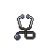

Projects
2025

For this project, I watched a tutorial that introduced Android Mobile App Development. This tutorial ranged from creating new layouts, interacting with a cloud database, creating vector images, and some tips when pushing out your first release.
Android Studio • Kotlin • Firebase • Gradle •
My Memory Tutorial2022
For this project, me and my partner were tasked with creating a database using SQL, for teachers, students, and faculty to checkout and donate books.
C# • SQL • Windows Forms App • SSMS
2025
For this project, I furtherd my development of mobile applications making a simple user interface that collects different measurements to estimate the number of items in either a cylindircal or rectangular shaped jar.
Android Studio • Kotlin
2025
For this project, I created a basic tap game that uses an SQLite3 database, storing player data such as taps and username and displaying the top 10 scores in a separate activity. Additionally, it utilizes the Retrofit library to send API requests and Flask to handle them.
Android Studio • Kotlin • Python • SQLite3 • Flask
2024

My first side project, where I took what I learned from the IUK web team and classes at AU and built the frontend and backend for this site as well as created the tests for. The purpose of this site was to create a potential tool to help athletic trainers and students fill out Patient Outcome Reported Measure forms.
Angular • Python • MySQL • Pytest • PlayWright